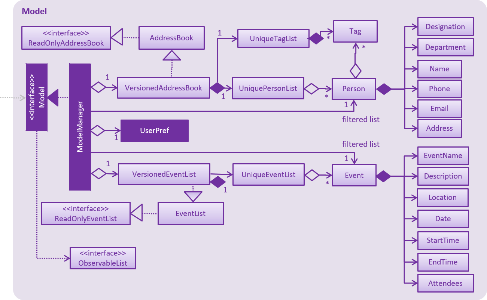

1. Setting up
1.1. Prerequisites
-
JDK
9or laterJDK 10on Windows will fail to run tests in headless mode due to a JavaFX bug. Windows developers are highly recommended to use JDK9. -
IntelliJ IDE
IntelliJ by default has Gradle and JavaFx plugins installed.
Do not disable them. If you have disabled them, go toFile>Settings>Pluginsto re-enable them.
1.2. Setting up the project in your computer
-
Fork this repo, and clone the fork to your computer
-
Open IntelliJ (if you are not in the welcome screen, click
File>Close Projectto close the existing project dialog first) -
Set up the correct JDK version for Gradle
-
Click
Configure>Project Defaults>Project Structure -
Click
New…and find the directory of the JDK
-
-
Click
Import Project -
Locate the
build.gradlefile and select it. ClickOK -
Click
Open as Project -
Click
OKto accept the default settings -
Open a console and run the command
gradlew processResources(Mac/Linux:./gradlew processResources). It should finish with theBUILD SUCCESSFULmessage.
This will generate all resources required by the application and tests.
1.3. Verifying the setup
-
Run the
seedu.address.MainAppand try a few commands -
Run the tests to ensure they all pass.
1.4. Configurations to do before writing code
1.4.1. Configuring the coding style
This project follows oss-generic coding standards. IntelliJ’s default style is mostly compliant with ours but it uses a different import order from ours. To rectify,
-
Go to
File>Settings…(Windows/Linux), orIntelliJ IDEA>Preferences…(macOS) -
Select
Editor>Code Style>Java -
Click on the
Importstab to set the order-
For
Class count to use import with '*'andNames count to use static import with '*': Set to999to prevent IntelliJ from contracting the import statements -
For
Import Layout: The order isimport static all other imports,import java.*,import javax.*,import org.*,import com.*,import all other imports. Add a<blank line>between eachimport
-
Optionally, you can follow the UsingCheckstyle.adoc document to configure Intellij to check style-compliance as you write code.
1.4.2. Updating documentation to match your fork
After forking the repo, the documentation will still have the SE-EDU branding and refer to the se-edu/addressbook-level4 repo.
If you plan to develop this fork as a separate product (i.e. instead of contributing to se-edu/addressbook-level4), you should do the following:
-
Configure the site-wide documentation settings in
build.gradle, such as thesite-name, to suit your own project. -
Replace the URL in the attribute
repoURLinDeveloperGuide.adocandUserGuide.adocwith the URL of your fork.
1.4.3. Setting up CI
Set up Travis to perform Continuous Integration (CI) for your fork. See UsingTravis.adoc to learn how to set it up.
After setting up Travis, you can optionally set up coverage reporting for your team fork (see UsingCoveralls.adoc).
| Coverage reporting could be useful for a team repository that hosts the final version but it is not that useful for your personal fork. |
Optionally, you can set up AppVeyor as a second CI (see UsingAppVeyor.adoc).
| Having both Travis and AppVeyor ensures your App works on both Unix-based platforms and Windows-based platforms (Travis is Unix-based and AppVeyor is Windows-based) |
1.4.4. Getting started with coding
When you are ready to start coding,
-
Get some sense of the overall design by reading Section 2.1, “Architecture”.
-
Take a look at [GetStartedProgramming].
2. Design
2.1. Architecture

The Architecture Diagram given above explains the high-level design of the App. Given below is a quick overview of each component.
The .pptx files used to create diagrams in this document can be found in the diagrams folder. To update a diagram, modify the diagram in the pptx file, select the objects of the diagram, and choose Save as picture.
|
Main has only one class called MainApp. It is responsible for,
-
At app launch: Initializes the components in the correct sequence, and connects them up with each other.
-
At shut down: Shuts down the components and invokes cleanup method where necessary.
Commons represents a collection of classes used by multiple other components. Two of those classes play important roles at the architecture level.
-
EventsCenter: This class (written using Google’s Event Bus library) is used by components to communicate with other components using events (i.e. a form of Event Driven design) -
LogsCenter: Used by many classes to write log messages to the App’s log file.
The rest of the App consists of four components.
Each of the four components
-
Defines its API in an
interfacewith the same name as the Component. -
Exposes its functionality using a
{Component Name}Managerclass.
For example, the Logic component (see the class diagram given below) defines it’s API in the Logic.java interface and exposes its functionality using the LogicManager.java class.

Events-Driven nature of the design
The Sequence Diagram below shows how the components interact for the scenario where the user issues the command delete 1.

delete 1 command (part 1)
Note how the Model simply raises a AddressBookChangedEvent when the Address Book data are changed, instead of asking the Storage to save the updates to the hard disk.
|
The diagram below shows how the EventsCenter reacts to that event, which eventually results in the updates being saved to the hard disk and the status bar of the UI being updated to reflect the 'Last Updated' time.

delete 1 command (part 2)
Note how the event is propagated through the EventsCenter to the Storage and UI without Model having to be coupled to either of them. This is an example of how this Event Driven approach helps us reduce direct coupling between components.
|
The sections below give more details of each component.
2.2. UI component
API : Ui.java
The UI consists of a MainWindow that is made up of parts e.g.CommandBox, ResultDisplay, PersonListPanel, StatusBarFooter, BrowserPanel etc. All these, including the MainWindow, inherit from the abstract UiPart class.
The UI component uses JavaFx UI framework. The layout of these UI parts are defined in matching .fxml files that are in the src/main/resources/view folder. For example, the layout of the MainWindow is specified in MainWindow.fxml
The UI component,
-
Executes user commands using the
Logiccomponent. -
Binds itself to some data in the
Modelso that the UI can auto-update when data in theModelchange. -
Responds to events raised from various parts of the App and updates the UI accordingly.
2.3. Logic component
API :
Logic.java
-
Logicuses theAddressBookParserclass to parse the user command. -
This results in a
Commandobject which is executed by theLogicManager. -
The command execution can affect the
Model(e.g. adding a person) and/or raise events. -
The result of the command execution is encapsulated as a
CommandResultobject which is passed back to theUi.
Given below is the Sequence Diagram for interactions within the Logic component for the execute("delete 1") API call.

delete 1 Command2.4. Model component

API : Model.java
The Model,
-
stores a
UserPrefobject that represents the user’s preferences. -
stores the Address Book data.
-
exposes an unmodifiable
ObservableList<Person>that can be 'observed' e.g. the UI can be bound to this list so that the UI automatically updates when the data in the list change. -
does not depend on any of the other three components.
As a more OOP model, we can store a Tag list in Address Book, which Person can reference. This would allow Address Book to only require one Tag object per unique Tag, instead of each Person needing their own Tag object. An example of how such a model may look like is given below. |
2.5. Storage component

API : Storage.java
The Storage component,
-
can save
UserPrefobjects in json format and read it back. -
can save the Address Book data in xml format and read it back.
2.6. Common classes
Classes used by multiple components are in the seedu.addressbook.commons package.
3. Implementation
This section describes some noteworthy details on how certain features are implemented.
3.1. Event Sorting
3.1.1. Current Implementation
The sort mechanism is facilitated by Comparator<Event>.
When the sort method for FXObservableList is called, it will take a Comparator object to be use for sorting the list.
The comparator is able to take in two Event class objects and compare the relative parameter values.
The parameter can be EventName, Date & StartTime.
To allow sorting of these parameters, there are three types of comparators.
3.1.2. Design Considerations
Committing Event List after sorting
-
Alternative 1 (current choice): Commits and saves the entire event list.
-
Pros: Easy to implement and able to use undo to the previous state.
-
Cons: May have performance issues in terms of memory usage.
-
-
Alternative 2: Does not commit the event list.
-
Pros: Will use less memory.
-
Cons: Unable to use undo function to revert back to the previous view.
-
3.2. Invite feature
3.2.1. Current Implementation
The invite command allows users to add attendees to an existing event, which is represented by an Event object.
The command currently only allows users to add a single person to an event, based on the indices on the UI.
This command adds the invited Person 's email, which is unique, to a chosen Event, so that the attendees of a particular event is recorded.
This command only executes successfully if the event does not not clash with the person’s schedule.
The adding of attendees is facilitated by the class: Attendees, a list of emails of type String.
The following is a more detailed description of the class:
-
Attendees-
Each
Eventobject has anAttendees, which is a list of the emails of the differentPersonattending the event. -
This class is a wrapper class around the internal representation of a list of attendees that exposes only a few functions of a
SetofString. -
Only the email of the
Personis recorded in anEvent, as the email should be unique and uneditable.
-
Storing only the email of Person in the Attendees object of Event saves memory storage and facilitates the select feature. As we select a person, we can simply iterate through the event list and check whether the person’s email is in the attendees list.
Given below is an illustration to describe the detection of whether two events clash, which is facilitated by the method hasClash in Event:
Implementation of RemoveCommand is similar to InviteCommand, but removes persons from attendees of events instead.
3.2.2. Execution of Command
Given below is an example usage scenario and how the invite mechanism works.
Step 1. The user inputs invite 1 to/1 to invite the 1st person in the address book to the 1st event in the event list. The command text is passed to an instance of the LogicManager class.
Step 2. The LogicManager instance calls AddressBookParser#parsecommand, which parses the invite command phrase.
Step 3. InviteCommandParser#parse parses the person and event index. An instance of the InviteCommand encapsulating the two indices information is then returned.
Step 4. Logic Manager then executes this InviteCommand by calling InviteCommand#execute.
Step 5. The filtered person list and event list is first obtained by calling PersonModel#getFilteredPersonList and EventModel#getFilteredEventList. Based on the indices, the Person and Event is selected.
Step 6. Next, the Person object’s email is obtained by calling Person#getEmail
Step 7. Two steps of verification is required before the person is invited to the event. First, Event#hasAttendee checks whether the person is already invited to the event. Secondly, Model#hasClash checks whether the event clashes with the person’s schedule.
Step 8. After verification, the person’s email is added to the obtained Attendees object. The new Attendees object is then added to a new copy of the Event object.
Step 9. The new Event object is updated to the model by calling Model#updateEvent.
Step 10. The InviteCommand#execute finally returns a CommandResult with a success message.
The sequence diagram below illustrates the execution of the invite command.

3.2.3. Design Consideration
Aspect: How to link Person and Event
-
Alternative 1 (current choice): Saves only the emails of the Persons in the Attendees of Events.
-
Pros: Saves space. Able to filter EventList easily.
-
Cons: Requires going through the entire list of AddressBook to obtain details of persons attending the particular event.
-
-
Alternative 2: Saves the entire information of Events for each Persons.
-
Pros: Fast access to information of Events attended by any Persons.
-
Cons: Takes up a lot of storage space and memory. Many repeated items within the storage files.
-
Aspect: Data structure to support invite command
-
Alternative 1 (current choice): Use
HashSetto store persons names.-
Pros: Easier and faster to retrieve or validate names stored. Able to handle duplicates easily.
-
Cons: Sequence of persons added is lost. Currently, this feature is not important for the project.
-
-
Alternative 2: Use
ArrayListto store persons names.-
Pros: Names are stored in order of addition.
-
Cons: Inefficient when handling data.
-
3.2.4. Future Improvements
Adding entire department or multiple persons to an event
The current invite command only invites one person to a chosen event based on the index chosen. This feature can be further extended to enable inviting more than one person or an entire department to an event.
One possible way to to implement this is to have the user
-
input a certain range (2-5) or
-
multiple indices (1, 3, 6) or
-
a mixture of both (1-3, 4, 6-10)
-
input the department name
The same concept can also be applied to events, being able to invite one person to multiple events with one single command.
Implementation of this additional feature would require changes to both InviteCommandParser and InviteCommand#execute. Additionally, handling of clashing events needs to be considered as it now involves more than one participants.
3.3. Select feature
3.3.1. Current Implementation
The select command allows users to view the event schedules of an employee on a certain date, month, and year, or all of his/her events.
The command currently only allows users to view the event of a single employee, based on the indices of the employee list on the UI.
This command only executes successfully if the input index is valid (not out of bound).
The command is facilitated by the class: Attendees, a list of emails of type String, as described in Section 3.2.1.
3.3.2. Execution of Command
Given below is an example usage scenario and how the select mechanism works.
Step 1. The user inputs select 1 y/2018 m/06 to select the 1st person in the address book and view his/her event schedule on June 2018.
Step 2. The command text is passed to an instance of the LogicManager class.
Step 3. The LogicManager instance calls AddressBookParser#parsecommand, which parses the select command phrase.
Step 3. InviteCommandParser#parse parses the person and date parameter(optional). Depending on whether the date parameter is inputted, an instance of the Select encapsulating the relevant information is then returned.
Step 4. Logic Manager then executes this SelectCommand by calling SelectCommand#execute.
Step 5. The filtered person list is first obtained by calling PersonModel#getFilteredPersonList. Based on the index, the Person is selected.
Step 6. Next, the Person object’s email is obtained by calling Person#getEmail
Step 7a. If the user chose to view all the events of the person (e.g. select 1), an AttendeeContainsEmailPredicate object will be instantiated.
Step 7b. If the user chose to view the events of the person on a certain time period (e.g. select 1 y/2018 m/12), an EventContainsAttendeeAndDatePredicate object will be instantiated.
Step 8. The filtered event list is then updated by calling Model#updateFilteredEventList with the generated predicate.
Step 9. The filtered event list is then sorted by calling Model@sortByDate.
Step 10. The SelectCommand#execute finally returns a CommandResult with a success message.
The sequence diagram below illustrates the execution of the invite command.
3.4. List Feature
3.4.1. Current Implementation
The list feature allows users to filter through all the individual people in ProManage and understand which department
they are from. The command currently has 2 sub-features; list all and list dep DEPARTMENT. The user can list all the
people in ProManage by simply typing list all. Alternatively, the user can filter through ProManage and get the
relevant Person’s information by listing those of the relevant department. The user can list multiple departments such
as list dep Admin Finance. As of now, each person can only be inside one department.
The listing of people from the respective departments is facilitated by the class: Departments,
a list of departments of type String.
The following is a more detailed description of the classes involved:
-
Department-
Each
Personobject has aDepartment, which is the department in which the person is in. -
This class is essentially another piece of information about the person.
-
Each
Personcan only be in oneDepartment.
-
3.4.2. Execution of Command
Given below is an example usage scenario and how the list mechanism works.
Step 1. The user executes list dep Admin to list only the people in the Admin department. The command text is passed
to an instance of the LogicManager class.
Step 2. The LogicManager instance calls AddressBookParser#parsecommand, which parses the list command prefix
"list".
Step 3. ListCommandParser#parse parses the type of command that is called upon and if applicable, the departments
listed. The list command can take in either all or dep. all means that are no predicates and 'dep' means specific
departments are about to be listed. An instance of the ListCommand encapsulating the type of ListCommand and if
applicable, the predicates involved, is then returned to Logic Manager.
Step 4. Logic Manager then executes this ListCommand by calling ListCommand#execute.
Step 5. The filtered person list is first obtained by calling PersonModel#updateFilteredPersonList. Based on the departments, the list of Person are selected.
Step 9. The ListCommand#execute finally returns a CommandResult with a success message.
The sequence diagram below illustrates the execution of the invite command.
3.6. Logging
We are using java.util.logging package for logging. The LogsCenter class is used to manage the logging levels and logging destinations.
-
The logging level can be controlled using the
logLevelsetting in the configuration file (See Section 3.7, “Configuration”) -
The
Loggerfor a class can be obtained usingLogsCenter.getLogger(Class)which will log messages according to the specified logging level -
Currently log messages are output through:
Consoleand to a.logfile.
Logging Levels
-
SEVERE: Critical problem detected which may possibly cause the termination of the application -
WARNING: Can continue, but with caution -
INFO: Information showing the noteworthy actions by the App -
FINE: Details that is not usually noteworthy but may be useful in debugging e.g. print the actual list instead of just its size
3.7. Configuration
Certain properties of the application can be controlled (e.g App name, logging level) through the configuration file (default: config.json).
4. Documentation
We use asciidoc for writing documentation.
| We chose asciidoc over Markdown because asciidoc, although a bit more complex than Markdown, provides more flexibility in formatting. |
4.1. Editing Documentation
See UsingGradle.adoc to learn how to render .adoc files locally to preview the end result of your edits.
Alternatively, you can download the AsciiDoc plugin for IntelliJ, which allows you to preview the changes you have made to your .adoc files in real-time.
4.2. Publishing Documentation
See UsingTravis.adoc to learn how to deploy GitHub Pages using Travis.
4.3. Converting Documentation to PDF format
We use Google Chrome for converting documentation to PDF format, as Chrome’s PDF engine preserves hyperlinks used in webpages.
Here are the steps to convert the project documentation files to PDF format.
-
Follow the instructions in UsingGradle.adoc to convert the AsciiDoc files in the
docs/directory to HTML format. -
Go to your generated HTML files in the
build/docsfolder, right click on them and selectOpen with→Google Chrome. -
Within Chrome, click on the
Printoption in Chrome’s menu. -
Set the destination to
Save as PDF, then clickSaveto save a copy of the file in PDF format. For best results, use the settings indicated in the screenshot below.

4.4. Site-wide Documentation Settings
The build.gradle file specifies some project-specific asciidoc attributes which affects how all documentation files within this project are rendered.
Attributes left unset in the build.gradle file will use their default value, if any.
|
| Attribute name | Description | Default value |
|---|---|---|
|
The name of the website. If set, the name will be displayed near the top of the page. |
not set |
|
URL to the site’s repository on GitHub. Setting this will add a "View on GitHub" link in the navigation bar. |
not set |
|
Define this attribute if the project is an official SE-EDU project. This will render the SE-EDU navigation bar at the top of the page, and add some SE-EDU-specific navigation items. |
not set |
4.5. Per-file Documentation Settings
Each .adoc file may also specify some file-specific asciidoc attributes which affects how the file is rendered.
Asciidoctor’s built-in attributes may be specified and used as well.
Attributes left unset in .adoc files will use their default value, if any.
|
| Attribute name | Description | Default value |
|---|---|---|
|
Site section that the document belongs to.
This will cause the associated item in the navigation bar to be highlighted.
One of: * Official SE-EDU projects only |
not set |
|
Set this attribute to remove the site navigation bar. |
not set |
4.6. Site Template
The files in docs/stylesheets are the CSS stylesheets of the site.
You can modify them to change some properties of the site’s design.
The files in docs/templates controls the rendering of .adoc files into HTML5.
These template files are written in a mixture of Ruby and Slim.
|
Modifying the template files in |
5. Testing
5.1. Running Tests
There are three ways to run tests.
| The most reliable way to run tests is the 3rd one. The first two methods might fail some GUI tests due to platform/resolution-specific idiosyncrasies. |
Method 1: Using IntelliJ JUnit test runner
-
To run all tests, right-click on the
src/test/javafolder and chooseRun 'All Tests' -
To run a subset of tests, you can right-click on a test package, test class, or a test and choose
Run 'ABC'
Method 2: Using Gradle
-
Open a console and run the command
gradlew clean allTests(Mac/Linux:./gradlew clean allTests)
| See UsingGradle.adoc for more info on how to run tests using Gradle. |
Method 3: Using Gradle (headless)
Thanks to the TestFX library we use, our GUI tests can be run in the headless mode. In the headless mode, GUI tests do not show up on the screen. That means the developer can do other things on the Computer while the tests are running.
To run tests in headless mode, open a console and run the command gradlew clean headless allTests (Mac/Linux: ./gradlew clean headless allTests)
5.2. Types of tests
We have two types of tests:
-
GUI Tests - These are tests involving the GUI. They include,
-
System Tests that test the entire App by simulating user actions on the GUI. These are in the
systemtestspackage. -
Unit tests that test the individual components. These are in
seedu.address.uipackage.
-
-
Non-GUI Tests - These are tests not involving the GUI. They include,
-
Unit tests targeting the lowest level methods/classes.
e.g.seedu.address.commons.StringUtilTest -
Integration tests that are checking the integration of multiple code units (those code units are assumed to be working).
e.g.seedu.address.storage.StorageManagerTest -
Hybrids of unit and integration tests. These test are checking multiple code units as well as how the are connected together.
e.g.seedu.address.logic.LogicManagerTest
-
5.3. Troubleshooting Testing
Problem: HelpWindowTest fails with a NullPointerException.
-
Reason: One of its dependencies,
HelpWindow.htmlinsrc/main/resources/docsis missing. -
Solution: Execute Gradle task
processResources.
6. Dev Ops
6.1. Build Automation
See UsingGradle.adoc to learn how to use Gradle for build automation.
6.2. Continuous Integration
We use Travis CI and AppVeyor to perform Continuous Integration on our projects. See UsingTravis.adoc and UsingAppVeyor.adoc for more details.
6.3. Coverage Reporting
We use Coveralls to track the code coverage of our projects. See UsingCoveralls.adoc for more details.
6.4. Documentation Previews
When a pull request has changes to asciidoc files, you can use Netlify to see a preview of how the HTML version of those asciidoc files will look like when the pull request is merged. See UsingNetlify.adoc for more details.
6.5. Making a Release
Here are the steps to create a new release.
-
Update the version number in
MainApp.java. -
Generate a JAR file using Gradle.
-
Tag the repo with the version number. e.g.
v0.1 -
Create a new release using GitHub and upload the JAR file you created.
6.6. Managing Dependencies
A project often depends on third-party libraries. For example, Address Book depends on the Jackson library for XML parsing. Managing these dependencies can be automated using Gradle. For example, Gradle can download the dependencies automatically, which is better than these alternatives.
a. Include those libraries in the repo (this bloats the repo size)
b. Require developers to download those libraries manually (this creates extra work for developers)
Appendix A: Product Scope
Target user profile:
-
Companies have project management teams. Delegation of tasks and events can become complicated.
-
Project teams comprises of project managers, and the various sub branches : Admin, Logistics, Programmes, Publicity, Marketing and Safety.
-
This application aims to provide an all in one platform to ease the mode of task and event allocation.
-
prefer desktop apps over other types
-
can type fast
-
prefers typing over mouse input
-
is reasonably comfortable using CLI apps
Project Manager:
-
In charge of overall project.
-
He/She has the autonomy to add/edit/view/delete all of the events and tasks of his/her employees.
Department Head:
-
In charge of his/her department .
-
He/she has the autonomy to communicate with other department heads within the system.
-
He/she has the autonomy to add/edit/view/delete all of the events of his/her employees within the department.
Employees:
-
He/she is only entitled to add/edit/view/delete all of the events of himself/herself within the department.
Value proposition:
-
Facilitates workflow faster than a typical mouse/GUI driven app.
-
Saves consumers' efficiency, money and time tremendously.
Appendix B: User Stories
Priorities: High (must have) - * * *, Medium (nice to have) - * *, Low (unlikely to have) - *
| Priority | As a … | I want to … | So that I can… |
|---|---|---|---|
|
New Project Manager |
See usage instructions |
Refer to instructions when I forget how to use the ProManage |
|
Project Manager |
Add a new person |
Maintain a record of that employee |
|
Project Manager |
Delete a person |
Remove employees that left the company |
|
Project Manager |
Edit a person’s details |
Change the relevant information |
|
Project Manager |
Find a person by name |
Locate details of people without having to go through the entire list |
|
Project Manager |
Find a person by email |
Locate people through their unique work email address |
|
Project Manager |
List the people in alphabetical order by name or by department |
View the whole list of relevant people |
|
Project Manager |
Add a new event |
Maintain a record of that event |
|
Project Manager |
Delete an event |
Remove events that are no longer relevant |
|
Project Manager |
Edit the information of an event |
Update the relevant information |
|
Project Manager |
View an employee’s events |
To monitor my employee’s event schedule |
|
Project Manager |
View a colleague’s events |
To monitor my colleague’s event schedule before I plan an event |
|
Project Manager |
View an employee’s events on a certain date, month or year |
To view the employee’s events on a certain date, month or year |
|
Project Manager |
View an underling’s events on a certain date, month or year |
To check what have my underlings have been busy with |
|
Project Manager |
View a colleague’s events on a certain date, month or year |
To check if he/she is free for an important meeting |
|
Project Manager |
Invite an employee to events |
Add the person to the a department meeting |
|
Project Manager |
Invite an employee to events |
Add the person to the a company outing |
|
Project Manager |
Remove people from the event |
Remove irrelevant people from an event |
|
Project Manager |
Remove people from the event |
Remove people who I accidentally invited |
|
Project Manager |
Find an event |
Locate details of the event without having to look through the entire list |
|
Project Manager |
Sort the event list by name |
View the events by alphabetical order |
|
Project Manager |
Sort the event list by time and date |
View what are the more recent events of the event list |
|
Project Manager |
Select an event |
To know more information about the event |
|
Project Manager |
History of commands |
To view the commands previously inserted into ProManage |
|
Project Manager |
Undo command |
Undo my previously entered command |
|
Project Manager |
Redo command |
Redo my previously undo command |
|
User |
Exit command |
|
|
New Employee |
See usage instructions |
Refer to instructions when I forget how to use the ProManage |
|
Employee |
Find a person by name |
Locate details of people without having to go through the entire list |
|
Employee |
Find a person by email |
Locate people through their unique work email address |
|
Employee |
Sort the event list by name |
View the events by alphabetical order |
|
Employee |
Sort the event list by time and date |
View what are the more recent events of the event list |
|
Employee |
View a colleague’s events |
To check out what have my colleague been up to |
|
Employee |
Invite my colleagues to events |
Add persons to the selected event |
{More to be added}
Appendix C: Use Cases
(For all use cases below, the System is the ProManage and the Actor is the user, unless specified otherwise)
Use case: Add person
MSS
-
User requests to add a person.
-
ProManage adds records down the input information of the person.
-
ProManage adds person.
Use case ends.
Extensions
-
2a. The list is empty.
Use case ends.
-
3a. The given index is invalid.
-
3a1. AddressBook shows an error message.
Use case resumes at step 2.
-
Use case: Edit person
MSS
-
User requests to edit information of person
-
ProManage shows a list of persons
-
User requests to edit a specific person in the list
-
AddressBook edits the person
Use case ends.
Extensions
-
2a. The list is empty.
Use case ends.
-
3a. The given index is invalid.
-
3a1. AddressBook shows an error message.
Use case resumes at step 2.
-
Use case: Delete person
MSS
-
User requests to list persons
-
AddressBook shows a list of persons
-
User requests to delete a specific person in the list
-
AddressBook deletes the person
Use case ends.
Extensions
-
2a. The list is empty.
Use case ends.
-
3a. The given index is invalid.
-
3a1. AddressBook shows an error message.
Use case resumes at step 2.
-
Use case: Add Event
MSS
-
User requests to create an event.
-
ProManage displays input format and requests user to enter event input details according to format.
-
User enters event details.
-
Program displays users input and confirm the input with user.
-
User confirms with ProManage
-
ProManage adds event to user’s event list.
Use case ends.
Extensions
-
3a. User input incorrect format.
-
3a1. ProManage shows an error message.
Use case resumes at step 2.
-
Use case: Delete event
MSS
-
User requests to delete an event
-
ProManage shows a list of events
-
User requests to delete a specific event in the list
-
AddressBook deletes the event
Use case ends.
Extensions
-
2a. The list is empty.
Use case ends.
-
3a. The given index is invalid.
-
3a1. AddressBook shows an error message.
Use case resumes at step 2.
-
Use case: Edit event
MSS
-
User requests to edit an event.
-
ProManage shows a list of events to the user.
-
User requests to edit a specific event in the list
-
User enters the updated details of the event.
-
ProManage confirms edited details with the user.
-
User confirms with ProManage.
-
ProManage edits confirmed details of the chosen event.
Use case ends.
Extensions
-
2a. The list is empty.
Use case ends.
-
3a. The given index is invalid.
-
3a1. AddressBook shows an error message.
Use case resumes at step 2.
-
Use case: Invite employees to events
MSS
-
User requests to add employee to events.
-
ProManage request employee details and event details.
-
User enters employee and event information.
-
ProManage adds employee to events
Use case ends.
Extensions
-
3a. Invalid employee.
-
3a1. AddressBook shows an error message.
-
Use case ends
-
-
3b. Employee is not originally invited to event.
-
3b1. AddressBook shows an error message.
-
Use case ends
-
-
3c. Event has no attendees
-
3c1. AddressBook shows an error message.
-
Use case ends
-
Use case: Remove employees from events
MSS
-
User requests to remove employee from an event.
-
ProManage request employee details and event details.
-
User enters employee and event information.
-
ProManage remove employee from events
Use case ends.
Extensions
-
3a. Invalid employee.
-
3a1. AddressBook shows an error message.
-
Use case ends
-
-
3b. Employee is already invited to event.
-
3b1. AddressBook shows an error message.
-
Use case ends
-
-
3c. Event conflicts with employee’s schedule
-
3c1. AddressBook shows an error message.
-
Use case ends
-
Use case: View an employee’s schedule on a date/month/year
MSS
-
User requests to view an employee’s schedule.
-
ProManage request employee details and date details.
-
User enters employee and date information.
-
ProManage remove employee from events
Use case ends.
Extensions
-
3a. Invalid employee.
-
3a1. AddressBook shows an error message.
-
Use case ends
-
-
3b. Invalid date format
-
3b1. AddressBook shows an error message.
-
Use case ends
-
{More to be added}
Appendix D: Non Functional Requirements
-
Should work on any mainstream OS as long as it has Java
9or higher installed. -
Should be able to hold up to 1000 persons without a noticeable sluggishness in performance for typical usage.
-
A user new to the program should be able to navigate and utilize the CLI easily.
-
Experienced CLI users should be able to be familiar with all the commands and navigation within the program.
-
A user with above average typing speed for regular English text (i.e. not code, not system admin commands) should be able to accomplish most of the tasks faster using commands than using the mouse.
-
User cannot be in multiple departments.
-
The program should respond within 2 seconds after creation, editing, and deletion of events.
{More to be added}
Appendix F: Product Survey
Product Name
Author: …
Pros:
-
…
-
…
Cons:
-
…
-
…
Appendix G: Instructions for Manual Testing
Given below are instructions to test the app manually.
| These instructions only provide a starting point for testers to work on; testers are expected to do more exploratory testing. |
G.1. Launch and Shutdown
-
Initial launch
-
Download the jar file and copy into an empty folder
-
Double-click the jar file
Expected: Shows the GUI with a set of sample contacts. The window size may not be optimum.
-
-
Saving window preferences
-
Resize the window to an optimum size. Move the window to a different location. Close the window.
-
Re-launch the app by double-clicking the jar file.
Expected: The most recent window size and location is retained.
-
{ more test cases … }
G.2. Deleting a person
-
Deleting a person while all persons are listed
-
Prerequisites: List all persons using the
listcommand. Multiple persons in the list. -
Test case:
delete 1
Expected: First contact is deleted from the list. Details of the deleted contact shown in the status message. Timestamp in the status bar is updated. -
Test case:
delete 0
Expected: No person is deleted. Error details shown in the status message. Status bar remains the same. -
Other incorrect delete commands to try:
delete,delete x(where x is larger than the list size) {give more}
Expected: Similar to previous.
-
{ more test cases … }
G.3. Saving data
-
Dealing with missing/corrupted data files
-
{explain how to simulate a missing/corrupted file and the expected behavior}
-
{ more test cases … }